For scale modellers
All your build research, in one notebook.
BenchBook gathers the photos, instructions, videos and notes for every build. Mark up reference shots and instructions, compare them side by side, and know exactly which paints you still need to buy.
Mac: version 1.2.0 · Free · Requires macOS 15 or later · Signed and notarised by Apple
Windows: preview · Free · Requires Windows 10 (version 2004) or later · Not yet signed
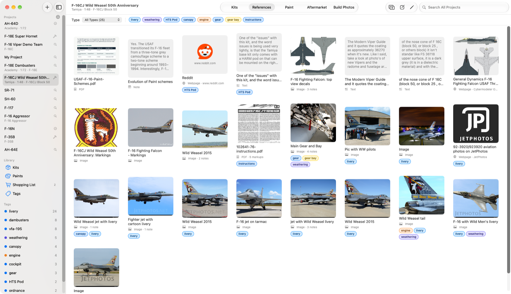
A notebook per build
Kits, references, paints and aftermarket parts for each project, with its status at a glance.
Capture from anywhere
Drag, paste or share photos, PDFs, web pages, videos and text straight into a project, or save them from Safari with a right-click.
Mark up photos and PDFs
Box and note details on photos; add notes, highlights and arrows to instructions. Originals are never changed.
Compare side by side
Open up to four images in one window, each zooming on its own.
Paints, planned
Your whole paint rack and your own mixes, each build's paint list, and a shopping list of what you're missing.
Your whole stash
Every kit you own or want, with box art, status and prices. Bring in your Scalemates stash in one go.
Every build gets its own notebook.
Each project keeps its kits, its research, its paint list and its aftermarket parts together, so everything for the F-16 is in one place and nothing for the Spitfire gets in the way.
- Track each build as Researching, In Progress, Paused or Completed, and filter the sidebar by status.
- Keep decals, resin, photo-etch and other aftermarket parts with their status: considering, ordered, in the stash, used.
- Move or copy references to another project by dragging them onto it in the sidebar, notes and markups included.
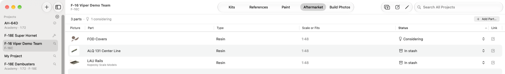
Know what's in the stash.
Keep a catalogue of every kit you own or want, one entry per box, with brand, scale, kit number, status, rating, prices and the box art. Bring in your whole Scalemates stash in one go.
- Import a Scalemates stash export or a CSV. Importing the same file again adds nothing. Export your kits as CSV.
- Mark each kit BNIB, Opened, WIP or Built. Start a build and its kits become WIP; finish it and they're Built.
- Give each project its kits on its own Kits tab, or start a new project from a kit.
- Kits you still need go on the shopping list, next to your paints.
- Take the box art with your iPhone's camera, straight into the kit.
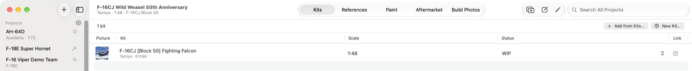
Save it the moment you find it.
Drag a photo from Safari, paste a link, or choose BenchBook in the Share menu. It lands in the right project with your tags and a note, and the original file is kept exactly as it was.
- Images, PDFs, Markdown, web pages, YouTube and Vimeo videos, text highlighted in Safari, and your own notes.
- Web pages get their preview image and description; videos get their poster, channel and length.
- A YouTube timestamp becomes a moment you can jump straight back to.
- Select a whole set by dragging a rectangle across the gallery, just like in Finder.
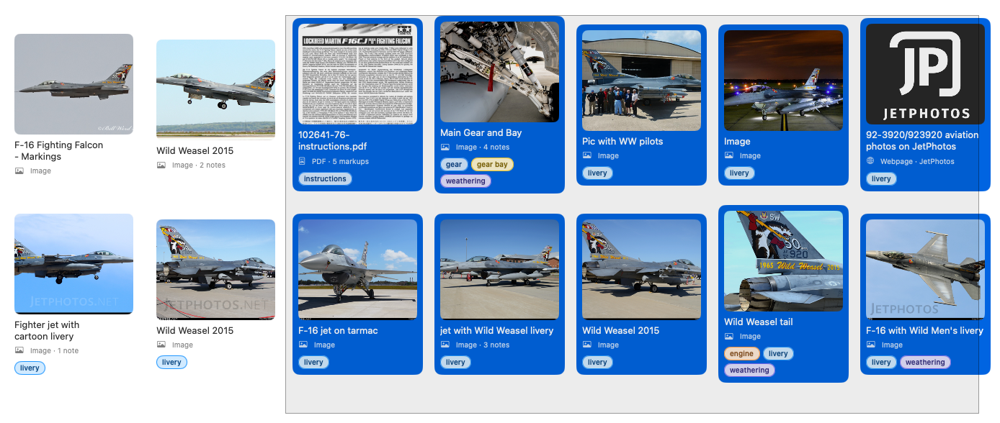
Right-click. Saved.
Turn on BenchBook in Safari's settings, then right-click any page, image or highlighted text and save it to BenchBook from the menu. It goes straight into the project you used last, and a small notice says where it went.
- Change your mind? Click Change… in the notice to move it to another project, or add tags and a note.
- Choose the project, tags and note before you save with the BenchBook button in Safari's toolbar.
- Save a PDF open in Safari as the PDF itself, including from sites you're signed in to.
- Save a page twice and BenchBook tells you it's already there, instead of adding a copy.
- The extension talks only to BenchBook on your Mac. Requires Safari 18.4 or later.
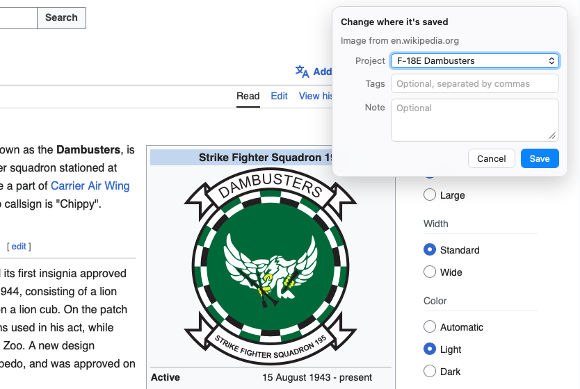
Write on the photo, not on a sticky note.
Zoom right in on a reference shot, draw a box around the detail that matters, and say what it is. Every box is numbered and listed beside the image, and searchable later.
- Zoom and pan with a trackpad, mouse wheel or keyboard; ⌘D draws a box.
- Your notes sit on top. The original photo is never edited.
- On Macs with Apple Intelligence, BenchBook can suggest a title and note for an image, on the Mac itself.
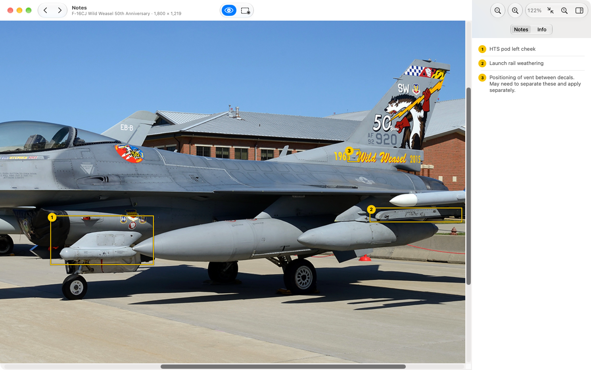
Mark up the instructions, not a printout.
Open kit instructions and painting guides in their own window, with page thumbnails, zoom and find. Add a note, highlight a step or draw an arrow to the part that matters, and give any of them a few words.
- Every markup is numbered and listed by page beside the PDF, and searchable later.
- Export a marked-up copy to print or share. Highlights and arrows with text get a numbered list at the end.
- Your markups sit on top. The original PDF is never edited.
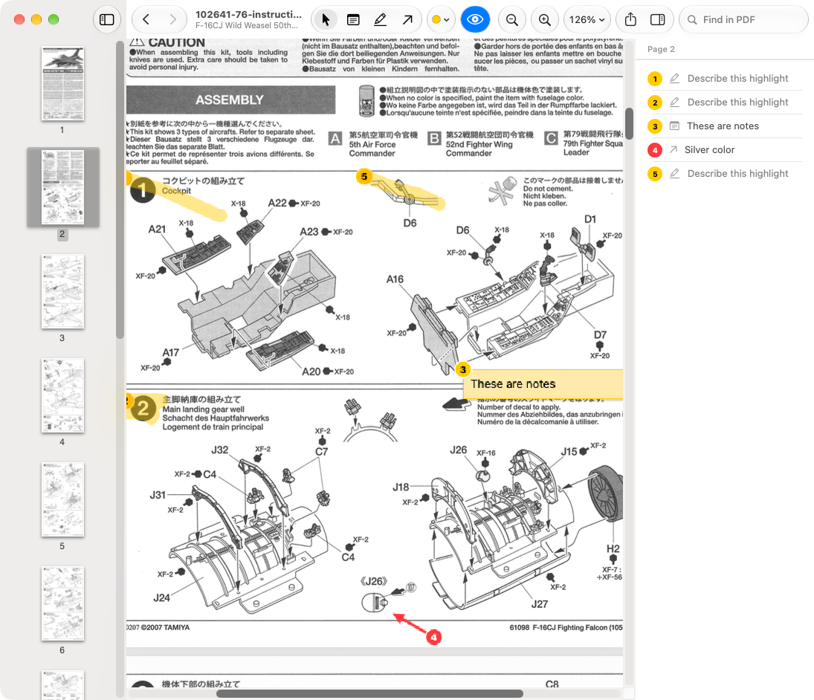
Two angles are better than one. Four are better still.
Select up to four images and open them side by side or in a grid. Each zooms on its own, and the notes panel follows whichever image you click.
- Drag in images from any project to add or swap one, across builds too.
- Double-click an image to fill the window, then double-click to go back.
- Step through the rest of a project in one pane while the others stay put.

Know what's on the rack and what's on the list.
Keep one catalogue of every paint you own or want, with brand, code and colour standard: FS 595, RAL, RLM, BS 381C and more. Add paints to a build with what they're for, and BenchBook works out what you still need to buy.
- List the colours from a painting guide, such as FS 36270, then choose a paint for each. Paints that match the colour's standard come first.
- Note what each paint is for on a build's Paint tab.
- A shopping list across all your builds, grouped by brand, that exports as a checklist.
- Filter by brand, range, type and what you own.
- Import and export the catalogue as CSV, to share it with friends.
- Download ready-made lists for Tamiya, Mr. Hobby, AK Interactive and Vallejo.
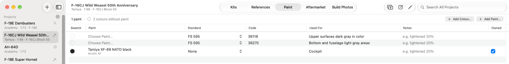
Mix it once. Write it down for good.
Save your own mixes in the paint catalogue, with a recipe of the paints that go in and how many parts of each. Then use a mix in any build, just like a paint from the bottle.
- Add paints from your catalogue to the recipe, set their parts, and put them in order with the arrows.
- A mix counts as owned when you own every paint in it. Anything missing goes on the shopping list.
- Give a mix a colour standard, so it's offered for that colour alongside bottled paints.
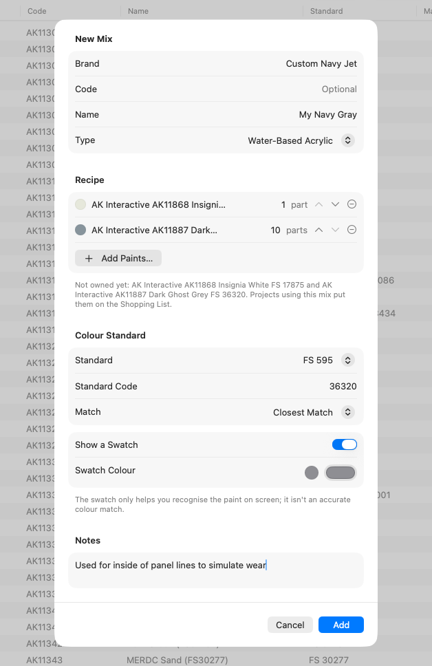
Start with a full paint catalogue.
Download a ready-made list of the paints you use and import it into BenchBook, instead of typing them in. 1,267 paints across six lists, with codes, names, FS, RLM and RAL matches where known, and swatch colours.
How to import a list
- Download the list for your paints above.
- In BenchBook, choose Paints in the sidebar, then click Import CSV… in the toolbar.
- Choose the file. BenchBook adds the paints and tells you how many it added.
Paints already in your catalogue are skipped, so importing a list again or importing two lists that overlap is safe. Then tick Owned for the paints on your rack. Swatch colours are approximate, for recognising a paint on screen.
Find that photo you saved six months ago.
One search covers every project: titles, notes, tags, file names, links, video descriptions, paints, parts, the notes you drew on images and your PDF markups. "f16" finds "F-16".
- A match in a box note opens the image zoomed straight to that box; a match in a PDF markup opens its page.
- A match in a video moment opens the video at that time.
- Narrow results to a tag as you type.
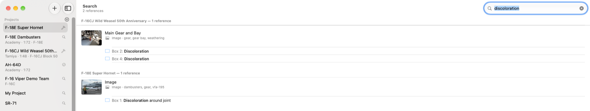
See it in action.
Short video tutorials on getting started and the features you'll use most. They play on YouTube.
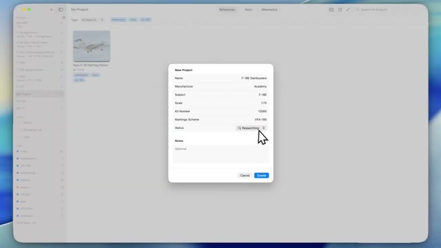
Part 1 Intro to BenchBook and Projects What BenchBook is for, and how projects hold your research.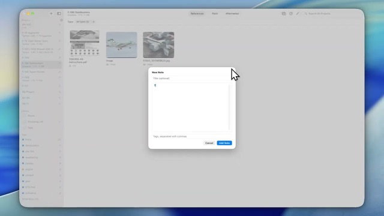
Part 2 Creating a Project Start a build and fill in its kit, scale and status.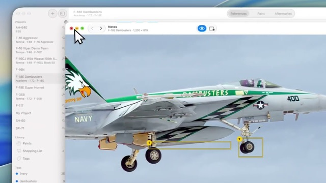
Part 3 Project Reference Images Add photos to a project, then zoom in and note the details.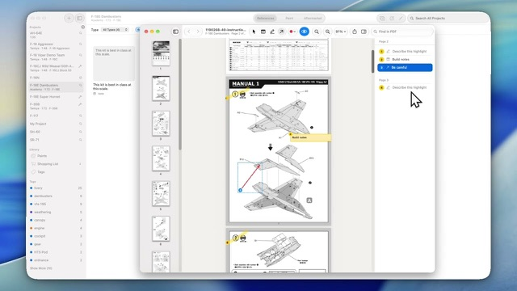
Part 4 Reference PDFs Open instructions and mark them up with notes, highlights and arrows.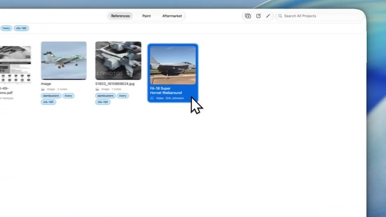
Part 5 Reference Sharing Between Projects Move or copy references from one build to another.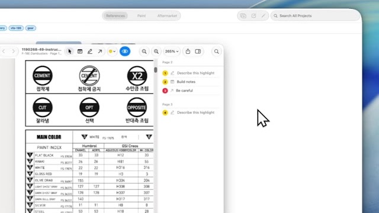
Part 6 Adding Colours for a Project List the colours a build needs and choose a paint for each.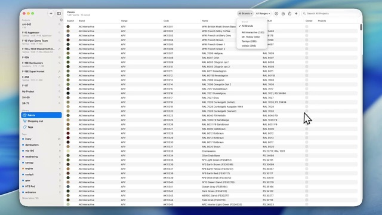
Part 7 Reference Colours to Paint Selection Match each colour in a painting guide to a paint from your catalogue.Your research stays yours.
BenchBook has no account, no subscription and no cloud service. Your library lives on your Mac, in a form you can always get back out.
Stored on your Mac
Every file you save is copied byte for byte into BenchBook's library. Nothing is uploaded anywhere.
Online only when you ask
BenchBook goes online on its own only to fetch previews for links you save and, if you agree, to check once a day for a new version. You can turn both off.
On-device intelligence
Apple Intelligence suggestions run entirely on your Mac. Your images are never sent away to be described.
One-file backups
Back up the whole library to a single file and restore it on any Mac. Every file is checked before anything is replaced.
Made for the Mac, not ported to it.
BenchBook is a native app that works the way your Mac does.
Start your next build with BenchBook.
Free for macOS 15 or later, and as a preview for Windows 10 or later.